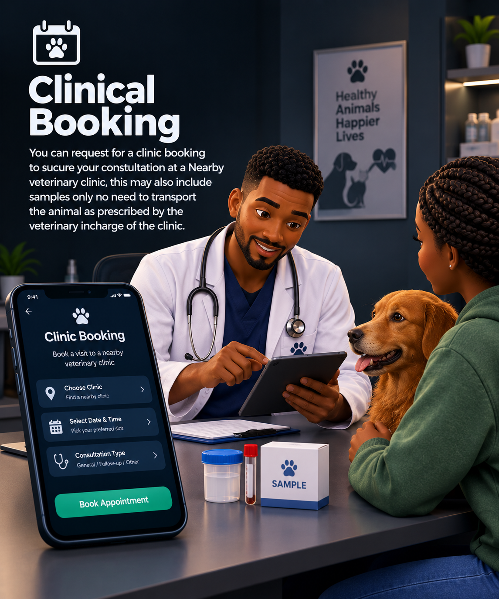

Clinical Booking

You can request for a clinic booking to sucure your constultation at a Nearby veterinary clinic, this may also include samples only no need to transport the animal as prescribed by the veterinary incharge of the clinic.
VETERINARY CARE, ON YOUR TIME
VetConnect connects you with licensed veterinary doctors — for pets like dogs,cats, livestock like goat ,sheep and cattle , and everything in between. Book a clinic or a farm or home visit this anytime of the day. appointment at a clinic near you.
For pet owners and livestock owners alike, there's a straightforward way to get help.
Every single veterinary doctor on our platform is a professional , every doctor has been critically vetted and rest assured they will provide the best of services.

Small Animal & General Practice
12 years treating dogs and cats, she joined vetconnect to spend more time with patients and ease the Administration burden in her profession.

Emergency & Critical Care
A trained leader in one of our Emergency veterinary deployment unit , he has seen alot, from swallowed socks ,100 poisoned swine;saved the all ,broken bone and many more , a 90% success rate.

Livestock & Farm Animals
Handles cows, goats, and poultry. Grew up on a farm before she ever picked up a stethoscope.

Large Animal & Equine Care
From North Eastern part of Kenya, He knows the big animal family starting from the
camels

Exotic Animals & Poultry
The right doctor for Rabbits, hens,Kanga and quils among other birds , she has mastered the birds anatomy.
From your first message to your animal getting care, it takes four simple steps.
Fill in the short form below with your animal type, what's wrong, and how urgent it is. It takes about a minute.
We pair you with the licensed vet best suited to your animal, whether that's a pet, livestock, or something more exotic. Expect a response in about 15 minutes.
Book a clinic slot, request a home or farm visit, or call in the EVDU if it's an emergency. Your vet will confirm the details with you.
Your vet treats your animal and gives you clear next steps. You can come back to VetConnect for follow-up care anytime.
Pet owner or livestock owner - send us a message and we will match you to a suitable veterinarian
VetConnect HQ, 4th Floor
Nairobi, Kenya
Every day, 8:00 AM – 11:00 PM
vetconnect@gmail.com